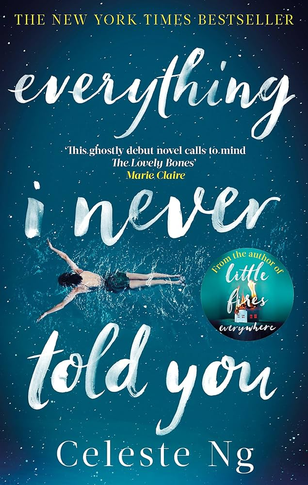

Fatemeh's Books List!
The Boy in the Striped Pyjamas
by John Boyne

The Boy in the Striped Pyjamas is a 2006 historical fiction novel by Irish
novelist John Boyne. The plot concerns a German boy named Bruno whose father
is the commandant of Auschwitz and Bruno's friendship with a Jewish detainee
named Shmuel.
Everything I Never Told You
by Celeste Ng

Everything I Never Told You is the 2014 debut novel by Celeste Ng. The novel
topped Amazon's Best Books of the Year list for 2014. The novel is about a
mixed-race Chinese-American family whose middle daughter Lydia is found
drowned in a nearby lake.
The Curious Incident of the Dog in the Night-Time
by Mark Haddon

The Curious Incident of the Dog in the Night-Time is a 2003 mystery novel by
British writer Mark Haddon. Its title refers to an observation by the fictional
detective Sherlock Holmes in the 1892 short story "The Adventure of Silver Blaze".